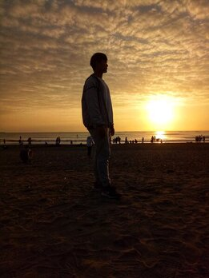

WEEK 4 光圈設定
WEEK 5 八項構圖技巧
WEEK 6 色溫、白平衡
空格字元
|
光圈值越小，光圈開越大，進光亮越少(請參考右圖)
使用時機: 大光圈:背景模糊、快門不用太快ex:動態物體、星空 小光圈:快門拉長 ISO感光度 ISO越大，拍出來的照片越亮 ex:陰天、演唱會、夜拍 *ISO開越大，顆粒(雜訊)感會越重 測光模式
還是不懂嗎?(按這) 曝光補償(EV) 當測得的光現不如預期，可透過曝光補償進行調整 [詳細解說連結] |
|
|
 逆光剪影
|